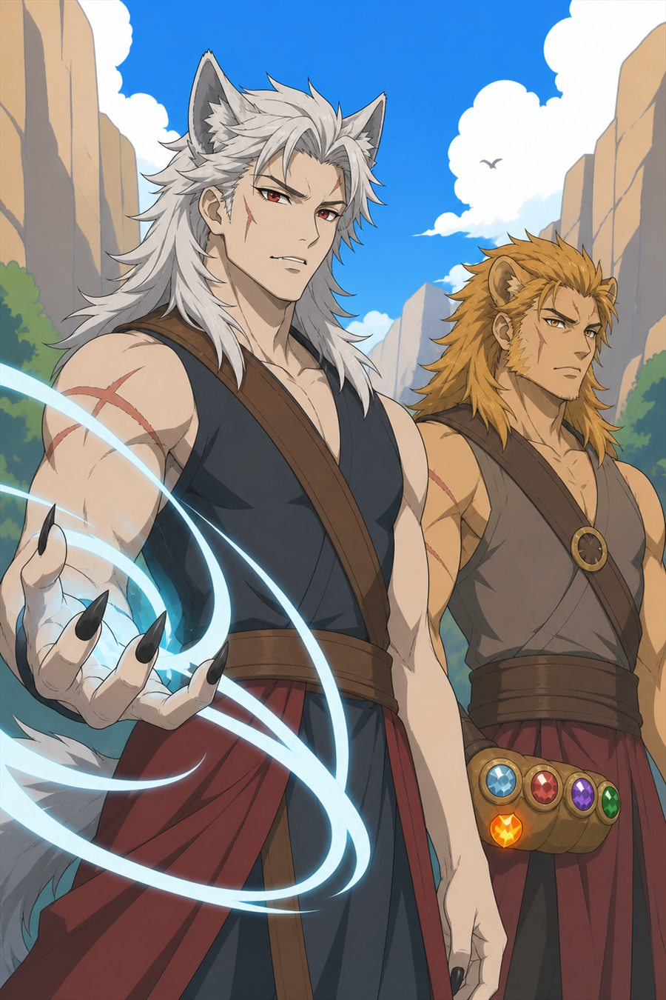
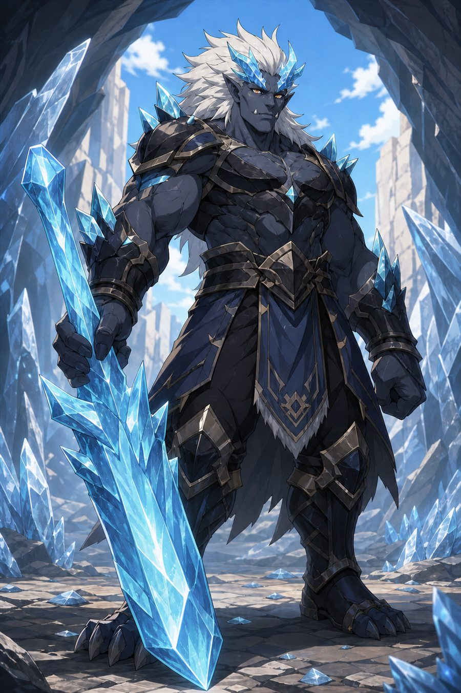
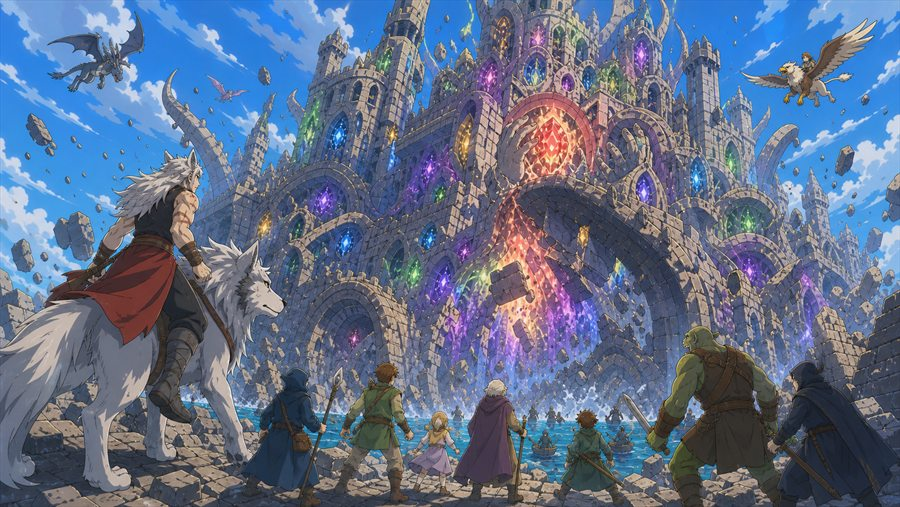

세계관 통합본
역사, 가족의 비극, 동료 모집과 최종 전쟁까지 이어지는 전체 정본.
GitHub에서 원문 보기ORIGINAL DARK FANTASY PROJECT
인간과 괴물이 함께 살던 세계. 영혼을 독점하려는 일곱 가문의 성벽 앞에서, 인간과 뱀파이어 사이에 태어난 한 소년이 복수 대신 공존을 선택한다.

THE CORE
“선악은 종족이 아니라 선택으로 나뉜다.”
이 이야기의 최종 적은 인간이 아니다. 공포를 자원으로 바꾸고, 영혼을 병기로 만들며, 성벽 안팎의 삶을 갈라놓은 체제다.
WORLD SYSTEM
소울스톤은 능력의 장치가 아니라 존재 그 자체다. 탄생, 성장, 죽음과 유물의 법칙이 모든 갈등의 출발점이 된다.
50 YEARS OF HISTORY
인간과 여러 괴물 종족이 충돌과 교류를 반복하며 같은 세계에서 살아간다.
불·물·번개·바람·땅·강철·빛의 가문이 인간 연합과 장로회를 세운다.
장로회는 안전을 명분으로 괴물을 사냥하고 별이 된 소울스톤의 낙하지를 독점한다.
주인공은 부모와 공동체를 잃고, 늑대의 판단으로 설산의 1대 원수에게 옮겨진다.
복수로 출발한 소년은 서로 다른 선택을 한 동료들을 만나 목표를 바꾼다.
괴물 연합과 인간 저항 세력이 장로회의 기록을 공개하고 민간인 구조를 먼저 시작한다.
수많은 영혼을 강제로 묶은 성이 새 생명으로 깨어나 인간과 괴물을 모두 삼킨다.
주인공은 성을 고통에서 해방하고, 승리보다 장례와 책임을 먼저 세운다.
CHARACTER BIBLE
주요 가족과 여행 동료, 지역 동맹, 인간 연합의 지휘관을 비주얼과 핵심 역할로 정리했다. 골렘·어인 최종안 / 하피·거미 후보 보기 →
SERIES · 60 EPISODES
각 화의 대표 이미지와 사건을 확인하고 바로 풀 웹툰으로 이동할 수 있다.
조건에 맞는 회차가 없습니다.
VISUAL ARCHIVE
캐주얼한 현대 애니메이션 선화와 밝은 셀 채색을 기준으로 인물과 종족의 인상을 통일했다.





PROJECT ARCHIVE
확정 설정과 아직 선택할 수 있는 항목을 분리해 애니메이션·만화·게임으로 확장하기 쉽게 관리한다.
역사, 가족의 비극, 동료 모집과 최종 전쟁까지 이어지는 전체 정본.
GitHub에서 원문 보기외형, 소울스톤, 전투 방식, 내적 갈등과 최종 역할을 인물별로 정리.
GitHub에서 원문 보기탄생과 죽음, 유물 사용, 공명, 침식과 쌍검 예외 규칙의 기준 문서.
GitHub에서 원문 보기작품명, 이름 문법, 영혼의 최종 운명과 전후 책임 등 아직 확정하지 않은 선택지.
GitHub에서 원문 보기STORY FIRST · THEN WEBTOON
짧은 완결 소설로 전체 이야기를 읽은 뒤, 360개 세로 스트립을 회차별로 이어 볼 수 있습니다.